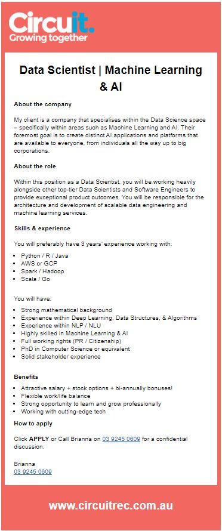
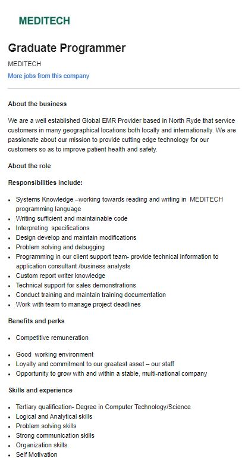
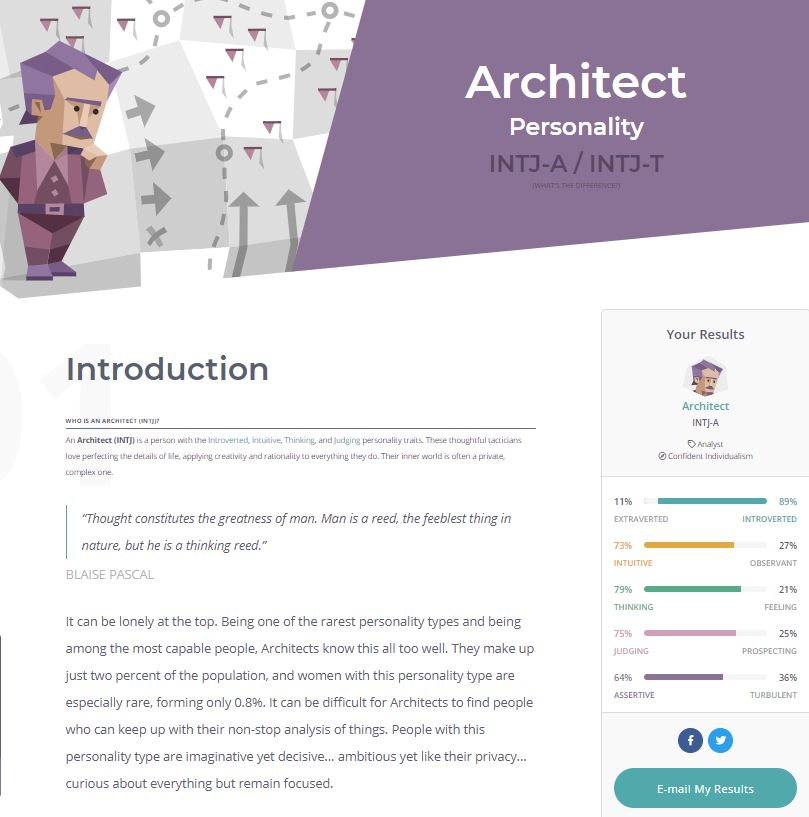
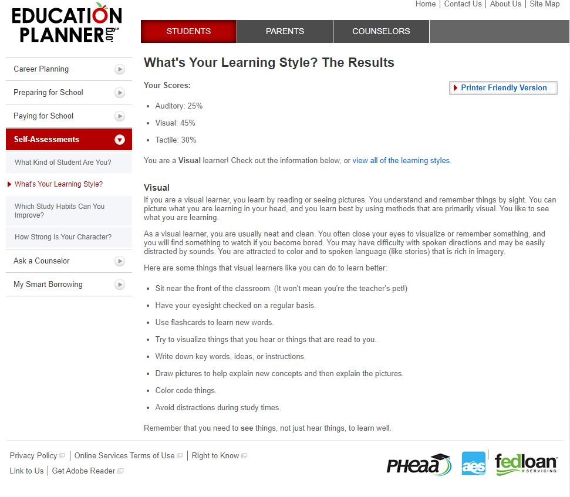
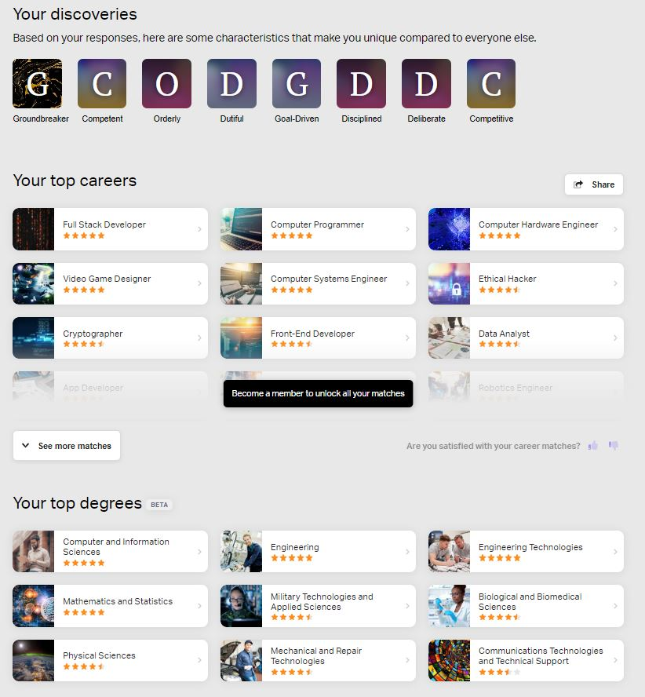
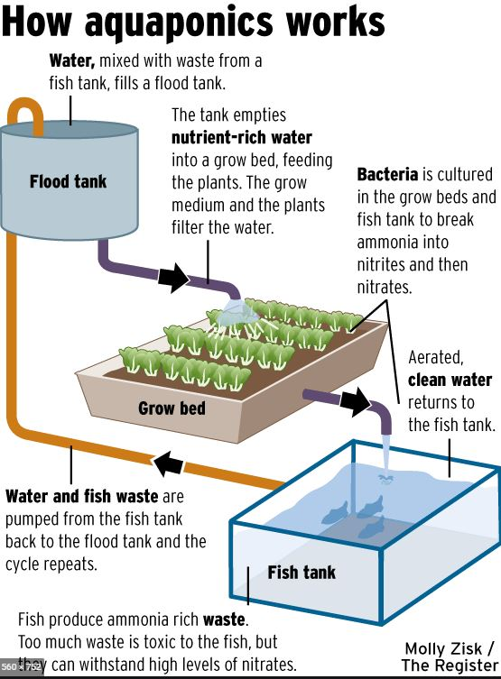

I have always been involved in computers my whole life my first computer was an atari st, my next computer was a pentium 100, back than it was the best technology, after that i found myself rebuilding computers for gaming. I enjoy online gaming when i have time, i go on discord and chat with friends while playing, my faviourite games include conan exiles and rust. As for my working life I got a job from a bathroom renovation company where i eventually became a tradesman after that i entered the mining construction industry which i have done on and off for 5 solid years. I was born in Australia but my father was born in Denmark My family and I still maintain our culture at christmas time. back in 2005 i started a bachelor of science degree at adelaide university where i did around 1.5 years towards the degree. I enjoy fishing and have been currently rebuilding a house over the last 1.5 years.
Ideal Job
This is a data scienctist position. I would need to develope artificial intelligence I.T products via working as a team with other software engineers and data scientists. I would be making programs that use machine learning by using algorithms to obtain data to learn from it, then the program can predict future trends or predicts what the user of that app or program requires for work or entertainment from past patterns.(https://www.simplilearn.com/data-science-vs-data-analytics-vs-machine-learning-article ) This position appeals too me because I want to be apart this exciting future, who knows where it will take me maybe I could be programming cars to drive themselves or in 30 years time I might be programming robots to do chores around peoples homes. Its also very well paid not that money is everything but it shows that a job like this has great value in the job market. As I mentioned previously its less demanding physically, maybe in the future all physical work could be obsolete and ive made the best decision I could of made for my own survival in the job market.
The skills I need for the position are You will preferably have 3 years’ experience working with:
- Python / R / Java
- AWS or GCP
- lasagna
- Spark / Hadoop
- Scala / Go
- Strong mathematical background
- Experience within Deep Learning, Data Structures, & Algorithms
- Experience within NLP / NLU
- Highly skilled in Machine Learning & AI
- Full working rights (PR / Citizenship)
- PhD in Computer Science or equivalent
- Solid stakeholder experience
You will have:
currently I have no experience, qualifications or skills to get this kind of job. To get a job similar to this I will finish my bachelor degree with RMIT then I will want to get actual real life experience in a I.T company like shown in example below while im doing this job I will continue studying at RMIT part time to work towards a PHD possibly I do not want to get ahead of myself. Or perhaps I will just continue studying full time I will know when I get there.
Personal Profile
Below you will find my three reslts from my personality myersbriggs test,learning test and my own personallity choosen test career and education test
Myers-Briggs
Learning test
Career test
these test results show me I am determined person with a logical thinking mind, my independent test shows I have chosen the right path in studying I.T., well these results suggest im a lone wolf that likes working alone however im happy to working a team, m not the type of person that wants a leader role for the sake of being a leader,but I will takeover if I am the best man for the job to move from point a to b. In forming a team I would want everybody that wants to do the best job possible If there member on te team that just wants a 50% pass mark it would annoy me because he/she will let everybody else down.
Project
overview
My project idea is a system to automate aquaponics, aquponics is a system where you farm fresh water fish and grow pants, the water with uneaten fish food and feisies is used feed plants with it which inturn cleans the water and pumps it ba into he system. I propose with a rasbery pi system to automate this process, through turing the hydo lights on during night time and activating pump to pump he freshwater back into the tank, tempreture control on the fish tank.also the gathering of A.I data to optemise yeilds.
Motivation
there are close to 8 billion people in the wold and food is always going to be a major commodity especially in china which relies heavily on importing food. The resources of the world are finite and This system is a lot more efficient then standard aquaculture because they need to flush the waste water away too stop the nitrogen buildup in the water .thus you can provide fish and plants for the demand of hungry humans to eat the AI application through using raspberry Pi will gather important data t eventually create more yields with efficient use of finite resources like power and water.
Description
below is a diagram on aquaponics (https://za.pinterest.com/pin/247275835770549087/)
As shown in the diagram you can have 4 system in which can be automated, firstly the fish food, secondly the pump which pumps the waste water from the fish tank to the flood tank triggered from an ammonia sensor,thirdly you will have the hydroponic lights for the plants for night time and finally a thermostat for the fish tank. using of WiFi raspberry pi you can program it to pump the waste water when intructed by the ammonia sensor, fish food you can have set at every 12 hours, the hydroponic lights can be automated from 6pm to 6am finally he thermostat depending on the fish breed will have a range say the temp needs to be from 15 to 20 degree you can program the PI to turn on the element to temperature. Now imagine you can do is say you have 100 of these aquaponic farms and you were wanting to optimize them you n do this eventually with artificial intelligence. You have 3 variables fish food wattage of hydro lights water temperature these three things you can increase or decrease to find the perfect balance between power consumption and yield. For example you can change these numbers say fish farm 1 we feed every 8 hours and have 300watt globes, in farm 2 we feed every 10hrs but have 500 watt globes farm 3 11hr but have 1000watt globes but now you need to know the power consumption. I propose is that these 3 variables are changed over farms 1-20 but mimicked on farms 21-40,41-60,61-80, and finally 81-100, now on the other farms you can grow different things such as tomatoes,cucumbers lettuces plus different species of fish etc now every time you harvest you now record the time taken plus the yield from the harvest once you have enough data you can get that information and obtain data. Once you have enough data you can use a A.I program witch can eventually run these systems to get maximum yield and efficiency. Picture an employee on the farm once this system is in place the computer asks you what crop are you using? What species of fish, how big are the fish are they fingerlings? ,1kg or 2kg and whats the wattage of the hydroponic lights? What fish feed are you using? Once you type this information in the computer knows when and how much too feed the fish, when to turn on the hydro lights when to turn them off, what temperature to idea for that certain spices of fish. The rasberry PI with be connected via Wifi so you can have a main computer monitoring the farms and will give the A.I information and tell them what to do.
Tools and technologies
This Project will need Rasberry PI's On WIFI and a power source to power them, they will control through a main computer which will give them commands to follow. You will need a greenhouse, growbed,fishtank, pipes,flood tank, hydroponic lights, an ammonia sensor a pump, a fish food feeder all these will also require a power source. Secondly you will need to have software Linux Raspbian to run them, as for the A.I aspect Python coding is best as its coding is a lot easier and efficient.
Skills required
For the project to succeed you will need to wire and install the modules and powersouce, build a green house and a flood tank stand, have a big fish tank, perhaps a rain water tank could be used. You will need to know how to write all the software to automate the fishfeeder,thermostat,pump and hydo lights also to Eventually write the A.I program once you have enough data colected. This project is very feasible to get the skills required, firstly to learn programming and A.I a degree in I.T as for hareware all the parts can be obtained throught EBAY and Amazon.
Outcome
If the project is successful an completely automated farm that produces fish and vegtables will come into existance will it solve world hunger probably not however its a start. This development if expanded and made into a large producer with say even automating planting of seeds, will cut out the expensive labour aspect of farming you could charge cheaper then everybody else and make a big impact on the market.